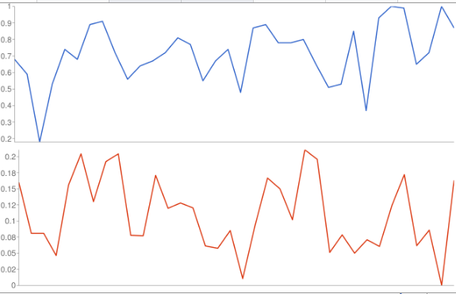

Higher the ratio of length of surfaced road to length of total roads in a state, higher the ratio of death on roads to total population. Which basically implies that better roads cause more deaths on road. Road accidents are a leading cause of death and severe injuries around the globe.
This seems to be counter-intuitive. The common notion is, the better the roads, the lesser fatalities would happen on the roads. However, the data reveals something different.
How I proceeded with the data?
I downloaded the total surfaced roads dataset for each state and union territories (2014) from data.gov.in. I then cleaned the data and calculated the ratio of length of total surfaced road to total length of road in every state and UT. Then I downloaded the dataset of deaths due to various reasons for each state and UT(2014) from data.gov.in. Then I again cleaned the data to retain total number of deaths on road due to various factors' column. I calculated the ratio of total number of road deaths to total population for each state and UT.I multiplied the obtained ratio by 10,000 to bring it to the same scale as of length of surfaced roads to length of total roads' ratio. Finally I plotted a sparkline graph and found a pattern.
DATASETS
The blue-line graph is the ratio of length of surfaced road to total road. The red-line graph is the ratio of deaths on road to total population.

Clearly, there is a pattern in better surfaced road ratio and deaths on road. A few of states and UTs that are an anomaly to this are Lakshadweep, Tamil Nadu, Tripura and Telangana. Lakshadweep has a ratio of 1 for surfaced roads to total roads. Still, the deaths on roads was 0. This might be because of less population and small size (32 Km sq). Whereas Tamil Nadu, Tripura and Telangna have lesser ratio of surfaced road to total roads and still they have a higher ratio of deaths on roads vs total deaths.
REASONS
The smoother, wider and better a road is, there are more chances of accidents. The the link between good roads and higher accident rates through the concept of risk compensation: the safer the situation, the greater the tendency of people to take risks. When a road is bumpy, steep or riddled with blind curves, drivers perceive it as riskier and are more likely to be careful. But when a road is perceived as safe, it is natural for drivers to drive at faster speed and/or be less alert.